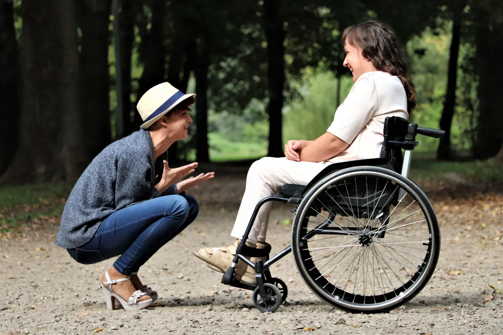
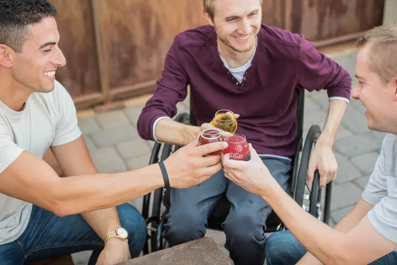
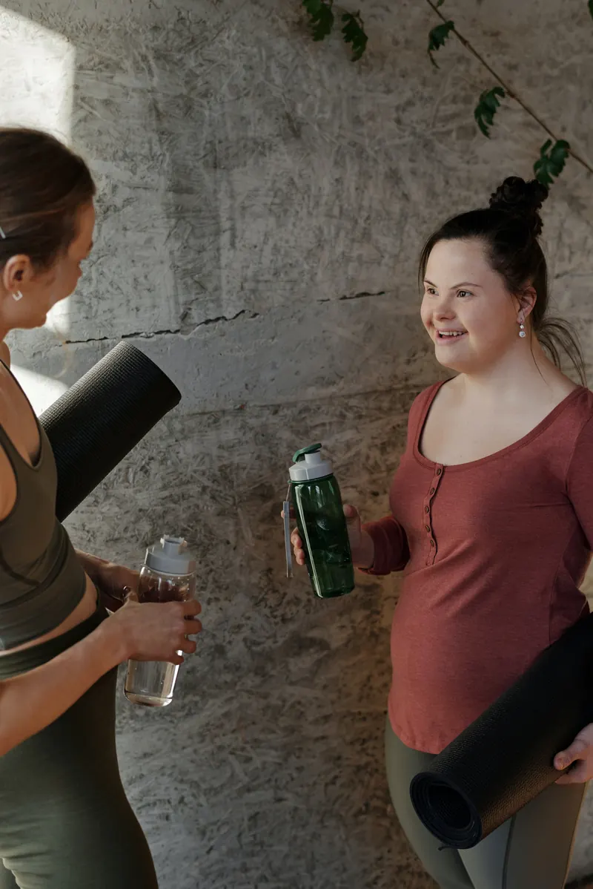
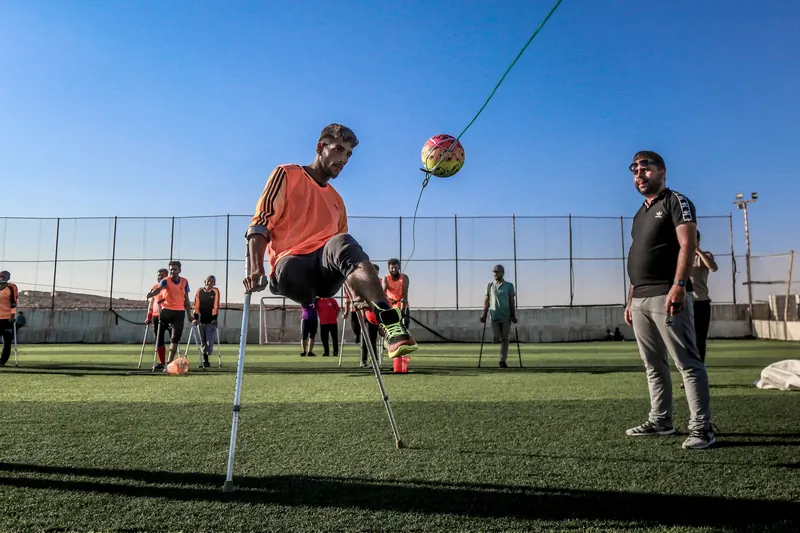

Supervisiones
Cada acompañante trabaja con supervisión profesional continua sobre su caso.
Acompañamiento terapéutico
Formamos equipos de acompañantes idóneos, con supervisión permanente y en comunicación constante con el equipo tratante y la familia, para favorecer el progreso y la reinserción social del paciente.
Consultanos por un casoEquipo Delfos es un grupo de profesionales convocado por el interés de contribuir con el tratamiento de pacientes que requieren de la presencia física de un otro en lo cotidiano.
Cada acompañante trabaja con supervisión profesional continua sobre su caso.
Encuentros mensuales para pensar estrategias conjuntas de intervención.
Comunicación constante con el equipo tratante y con la familia del paciente.

Una herramienta fundamental para el abordaje de tratamientos psicológico-psiquiátricos, neurológicos o fisiológicos: el acompañante enlaza los ámbitos de inserción del paciente, sus redes de contención y el equipo profesional a cargo del tratamiento.
Es, además, un derecho reconocido por la Ley Nacional de Salud Mental N° 26.657.
El proceso de atención debe realizarse preferentemente fuera del ámbito de internación hospitalario. Se orientará al reforzamiento, restitución o promoción de los lazos sociales. — Ley Nacional de Salud Mental N° 26.657
Dos minutos para entender qué es el acompañamiento terapéutico.
Video institucional — próximamente
El acompañamiento no busca sostener al paciente aislado, sino devolverle su lugar entre otros: los vínculos, las actividades, la participación. Ese es el sentido terapéutico del trabajo.



Escribinos y conversamos sobre el caso.